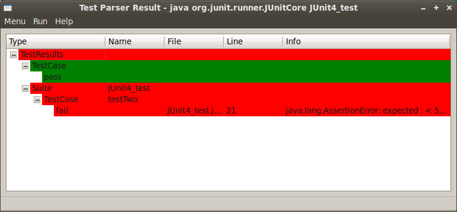
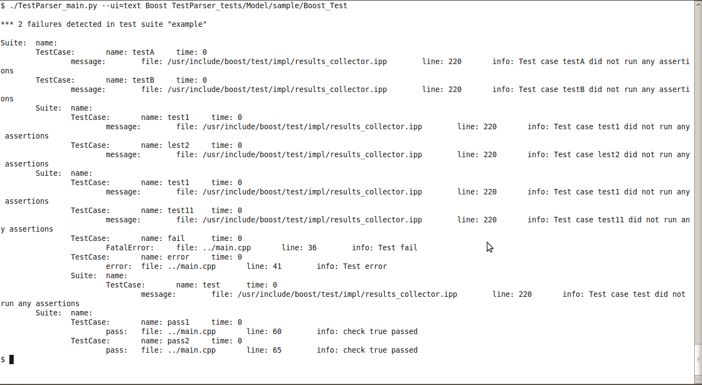

Name
Test Parser screen shots — Examples and Screen shots of Test Parser.
Examples

Example 2. Python Qt
 |
./TestParser_main.py --ui=qt PyUnittest 'python3 ./TestParser_unittests.py'
In the above invocation, we call the python interpreter and pass in
our script. But if the script has a
#!/usr/bin/python3 declaration, we can just
do the following:
./TestParser_main.py --ui=qt PyUnittest ./TestParser_unittests.py
Example 3. JUnit Qt

The following classpaths are set according to where junit is installed from the Ubuntu repositories.
CLASSPATH=/usr/share/java/junit4.jar:~/workspace/Test_parser/src/TestParser_tests/Model/sample/ ./TestParser_main.py --ui=qt JUnit 'java org.junit.runner.JUnitCore JUnit4_test'
CLASSPATH=/usr/share/java/junit.jar:~/workspace/Test_parser/src/TestParser_tests/Model/sample ./TestParser_main.py --ui=qt JUnit 'java junit.textui.TestRunner JUnit3_test'
Example 4. Qt Statistic View

./TestParser_main.py --ui=qt --view=statistic Boost TestParser_tests/Model/sample/Boost_Test
Example 5. Text Result View
|  |
./TestParser_main.py --ui=text --view=result Boost TestParser_tests/Model/sample/Boost_Test
Example 6. Text Statistic View
./TestParser_main.py --ui=texyt --view=statistic Boost TestParser_tests/Model/sample/Boost_Test 2 pass, 0 fail, 2 error
Example 7. Tkinter Result View
 |
./TestParser_main.py --ui=tkinter --view=result Boost TestParser_tests/Model/sample/Boost_Test
Example 8. Tkinter Statistic View

./TestParser_main.py --ui=tkinter --view=statistic Boost TestParser_tests/Model/sample/Boost_Test